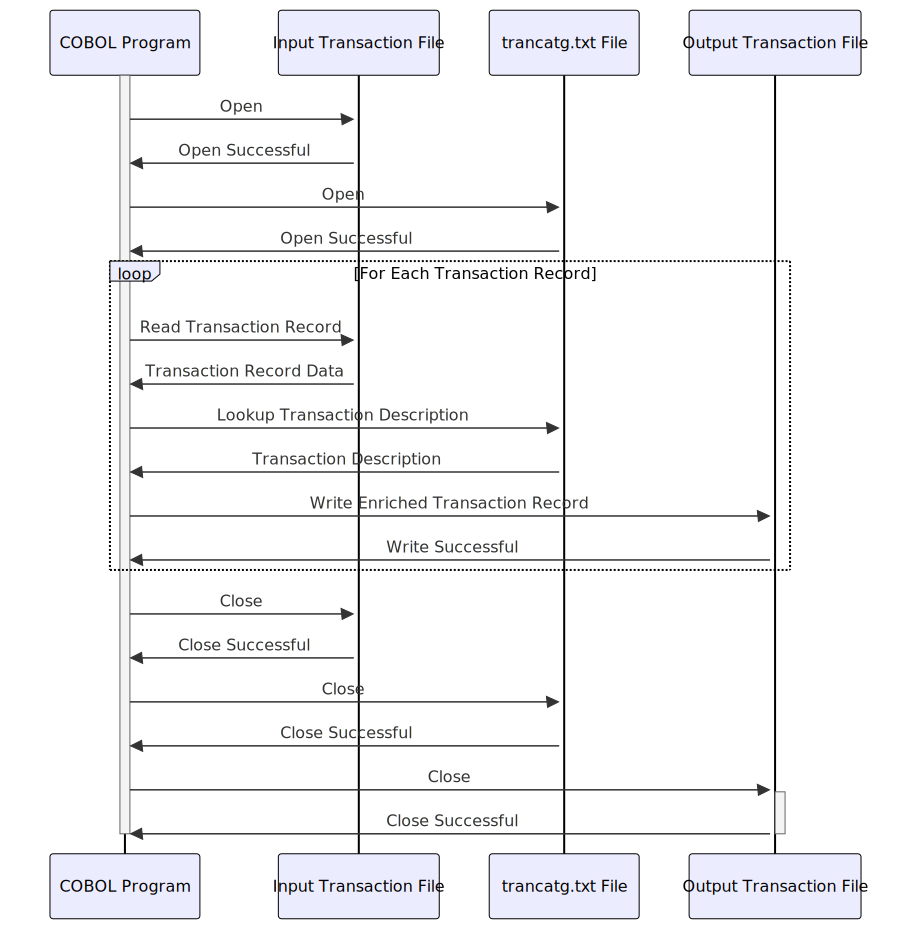

Gerado em: 1º de Outubro de 2024
Título do Documento: Especificação do Programa de Categorização de Transações de Cartão de Crédito
Descrição Resumida:
Este programa lê registros de transações de um arquivo de entrada, categoriza cada transação com base no arquivo trancatg.txt e grava as transações categorizadas em um arquivo de saída.
Histórias do Usuário: Como analista de dados, preciso categorizar as transações de cartão de crédito com precisão para que eu possa gerar relatórios e insights significativos.
Épico Relacionado: 4 - Processamento de Transações
Requisitos Técnicos:
trancatg.txt.
TransactionCode.TransactionCode do registro de transação de entrada.TransactionCode no arquivo trancatg.txt.TransactionDescription correspondente.TransactionDescription ao registro da transação.Modelos Relacionados:
Transaction: Representa uma única transação de cartão de crédito.
TransactionCode: String - O código que representa o tipo de transação.TransactionDescription: String - A descrição da categoria da transação.TransactionAmount: Decimal - O valor da transação.TransactionDate: Date - A data da transação.CardNumber: String - O número do cartão de crédito.TransactionCategory: Representa uma categoria de transações.
Code: String - O código exclusivo para a categoria de transação.Description: String - A descrição da categoria de transação.Configurações:
String - O caminho para o arquivo de transações de entrada.
String - O caminho para o arquivo de transações categorizadas de saída.
trancatg.txt: String - O caminho para o arquivo de código da categoria de transação.
Melhorias de Código:
trancatg.txt. Usar uma tabela hash ou uma estrutura de dados semelhante pode melhorar significativamente a velocidade da pesquisa.Melhorias de Segurança:
trancatg.txt e arquivos de dados de transações.Diagrama Conceitual:
–Made by “Smart Engineering” (by Compass.UOL)–